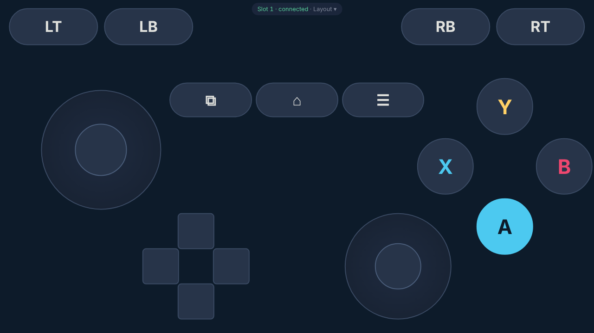
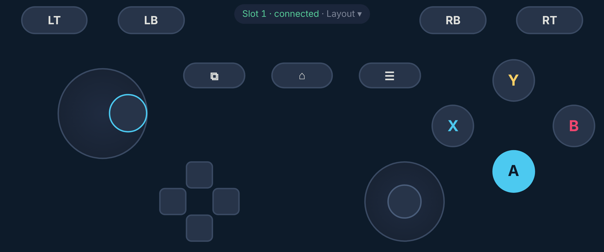
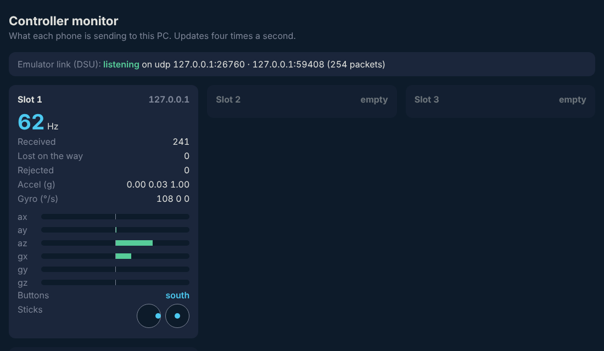

Part A checks the emulator link on your Windows PC alone: the PC server, the on-screen gamepad in a browser, and Dolphin reading its buttons. Part B adds a real Android phone for motion. About 15 minutes.
Before you start. The code reached the docs branch, not main: PR #10 merged into its stacked base. Merge PR #11 on GitHub first, and main will have it.
Untested on Windows. Every command below ran only in a Linux sandbox, which has no Windows, PowerShell or Dolphin. The server, page and DSU link were checked there; the Windows commands and the Dolphin menus were not. The folder C:\Users\aj\Desktop\GameDev is inferred from Rock Skipping's scripts, not confirmed.
Open PowerShell: Start menu → type PowerShell → Windows PowerShell. Every command works from any folder.
UNTESTED: not run on Windows; needs Git and your GitHub sign-in (the repo is private).
git clone https://github.com/Ajw2003/AJ-s-motionControls.git "C:\Users\aj\Desktop\GameDev\AJ-s-motionControls"You should see Cloning into 'C:\Users\aj\Desktop\GameDev\AJ-s-motionControls'... then done. Already cloned? Run git -C "C:\Users\aj\Desktop\GameDev\AJ-s-motionControls" pull instead.
Until PR #11 is merged, switch to the branch that holds the code. Skip this once main has it.
git -C "C:\Users\aj\Desktop\GameDev\AJ-s-motionControls" checkout AjsAgent/controller-work-to-mainYou should see Switched to a new branch 'AjsAgent/controller-work-to-main'. Without this, step 3 starts the old server and the [dsu] line never appears.
UNTESTED: not run on Windows; needs Node 20 or newer (node --version).
npm --prefix "C:\Users\aj\Desktop\GameDev\AJ-s-motionControls\relay" ci --omit=devYou should see added 2 packages and found 0 vulnerabilities (the sandbox's output). --omit=dev skips the code-style tools, which the server doesn't need.
UNTESTED on Windows. The same command in the sandbox printed the lines below.
node "C:\Users\aj\Desktop\GameDev\AJ-s-motionControls\relay\server.js"You should see [dsu] listening on udp 127.0.0.1:26760 and Rock Skipping relay listening on 0.0.0.0:3000. Leave this window open. If Windows Firewall asks about Node, choose Private networks and Allow (Part B needs it).
In Chrome or Edge on the PC, go to http://localhost:3000/monitor.html.
You should see Emulator link (DSU): listening on udp 127.0.0.1:26760 · no emulator connected yet and four empty slots.
UNTESTED: Dolphin's menus are from memory; names can differ slightly between versions.
AJ phone, address 127.0.0.1, port 26760You should see the monitor's top line change to · 127.0.0.1: followed by a port number: that's Dolphin subscribed.
Open a second tab at http://localhost:3000/pad.html, keep Xbox selected, click Start controller. Make the window wide; the gamepad is a landscape layout.

buttons [Cross].You should see Slot 1 · connected at the top, and Slot 1 filled on the monitor.
UNTESTED: this is the check nothing in the sandbox could do.
DSUClient/You should see the A box fill with a DSU name (likely Cross), then light up whenever you hold A. That proves Dolphin reads buttons from the link. Map the Main Stick the same way with the left stick.
Phones only hand out motion to secure pages. The quickest test route is a Chrome setting on Android that treats your PC's address as secure. The proper route, Rock Skipping's hotspot with HTTPS, works for iPhone too, but is a longer setup for another day.
UNTESTED: not run on Windows.
Get-NetIPAddress -AddressFamily IPv4 | Where-Object { $_.PrefixOrigin -eq 'Dhcp' } | Select-Object InterfaceAlias, IPAddressYou should see your Wi-Fi line with an address like 192.168.1.23. The phone must be on the same Wi-Fi.
On the phone, open Chrome at chrome://flags/#unsafely-treat-insecure-origin-as-secure. Enable it, enter http://192.168.1.23:3000 (your address), tap Relaunch.
UNTESTED: a standard Chrome developer setting, not tried with this page.
Open http://192.168.1.23:3000/pad.html on the phone, tap Start controller, turn the phone sideways.

You should see the monitor's Slot 1 jump to about 60 Hz and its accel/gyro bars move as you tilt the phone.

UNTESTED: the axis directions are reasoned, not yet seen in an emulator.
DSUClient/ entryYou should see the motion indicators move the same way the phone moves. Note any axis that moves the opposite way and tell me which one; it's a one-line fix.